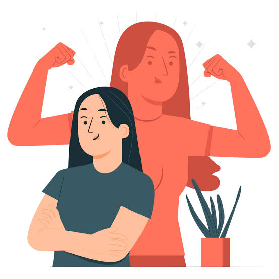
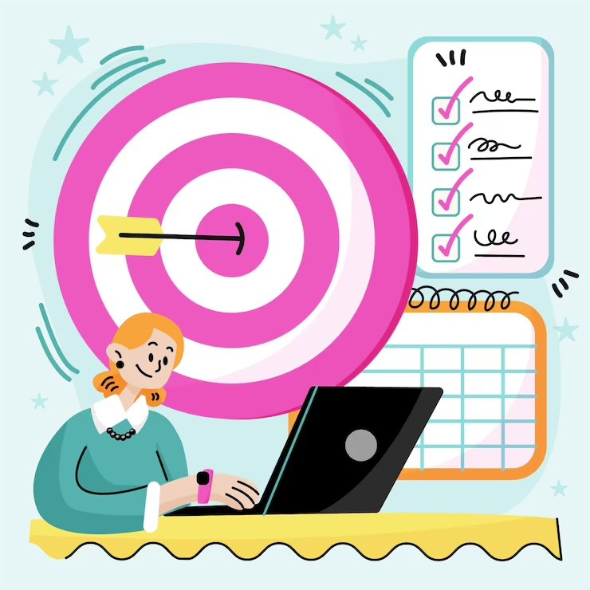

Mi Biografia
Logros
- Hice mapas de procesos en BPMN con Bizagi.
- Programé en C++ usando registros y estructuras.
- Trabajé en equipo en proyectos de innovación y reciclaje.
Fortalezas

- Soy persistente: no me rindo hasta que funciona.
- Soy curiosa y pregunto el porqué de las cosas.
- Me adapto bien al trabajo en equipo.
Objetivos

- Mejorar mi programación y mi inglés.
- Terminar mi carrera con buenas bases.
- Usar la tecnología para ayudar a mi región.
Mi recorrido
- Colegio Terminé el colegio y elegí estudiar Ingeniería de Sistemas.
- Universidad Empecé la universidad y aprendí mis primeros programas en C++.
- Proyectos Hice proyectos en equipo sobre procesos, datos e innovación.
- Hoy Hoy sigo aprendiendo y construyendo mi primer sitio web.
Gracias por visitar mi sitio
Puno, Perú
Tel: 933 429 092